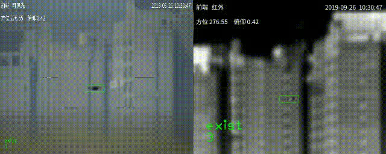
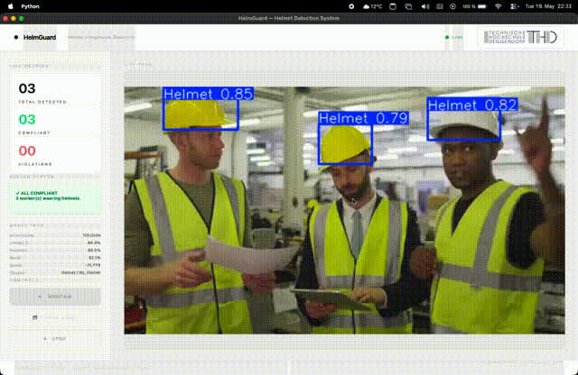
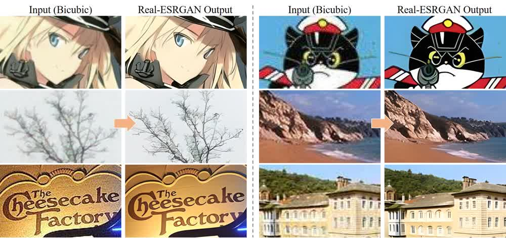
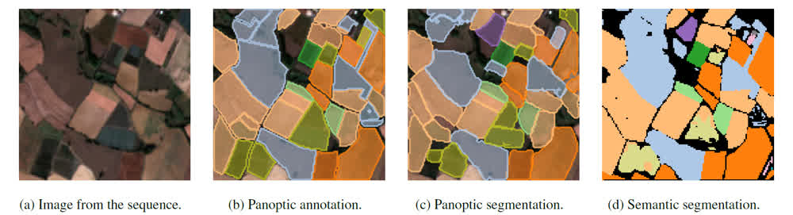

可行性评估
样本 + 目标 + 环境，先确认能不能做。
ZHITONGDA GALLERY
 01 / 地物提取建筑物提取
01 / 地物提取建筑物提取

02 / 检测追踪无人机识别 03 / 地物提取水体提取
03 / 地物提取水体提取

04 / 安全质检安全帽识别 06 / 安全质检线路隐患
06 / 安全质检线路隐患

07 / 影像处理影像超分
08 / 农林生态农作物分类 09 / 检测追踪火焰检测
09 / 检测追踪火焰检测
样本 + 目标 + 环境，先确认能不能做。
按场景优化模型，按指标验收。
交付可接入现有系统的方案。
04 作品集蜂窝 · 筛选 + Bento 矩阵首页 对照